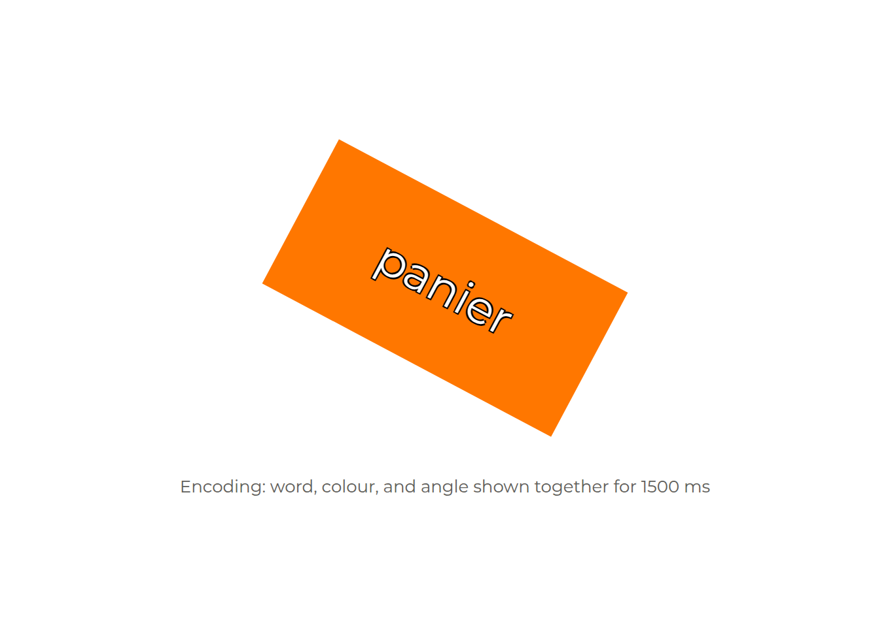
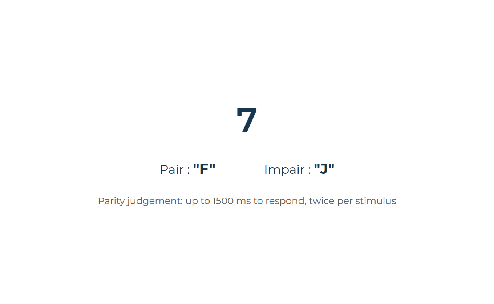
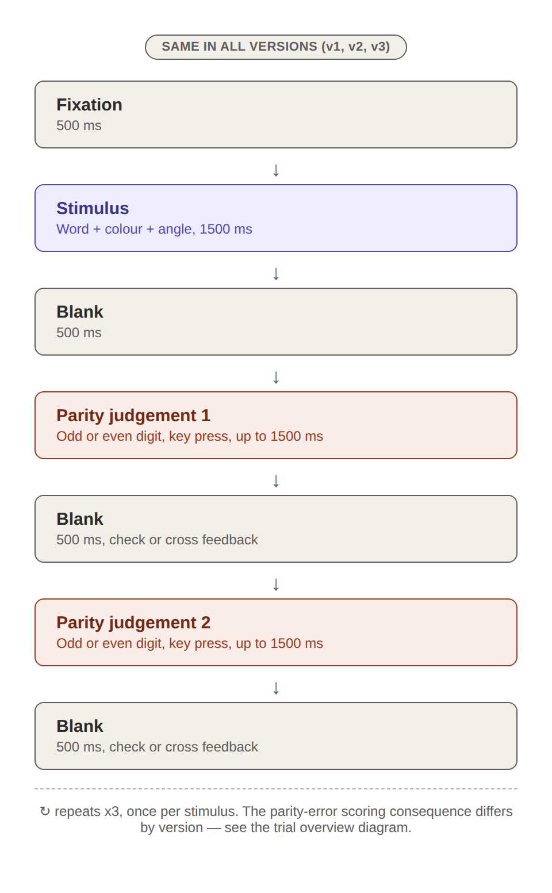
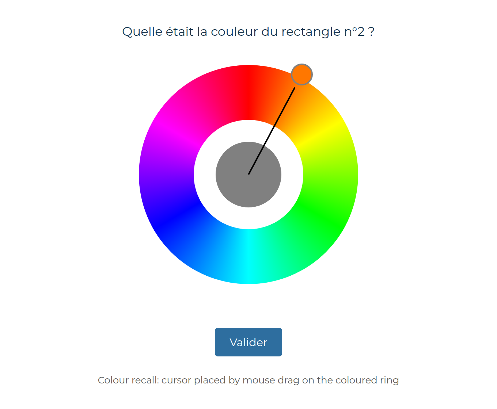
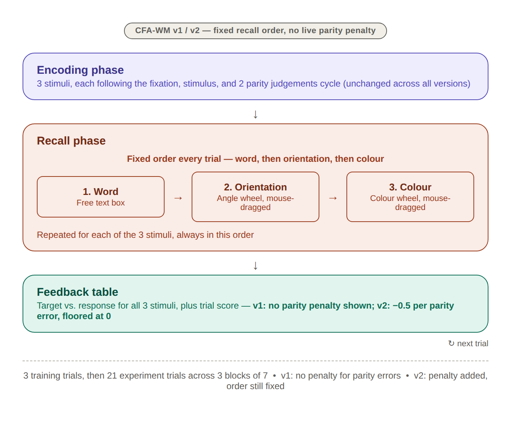
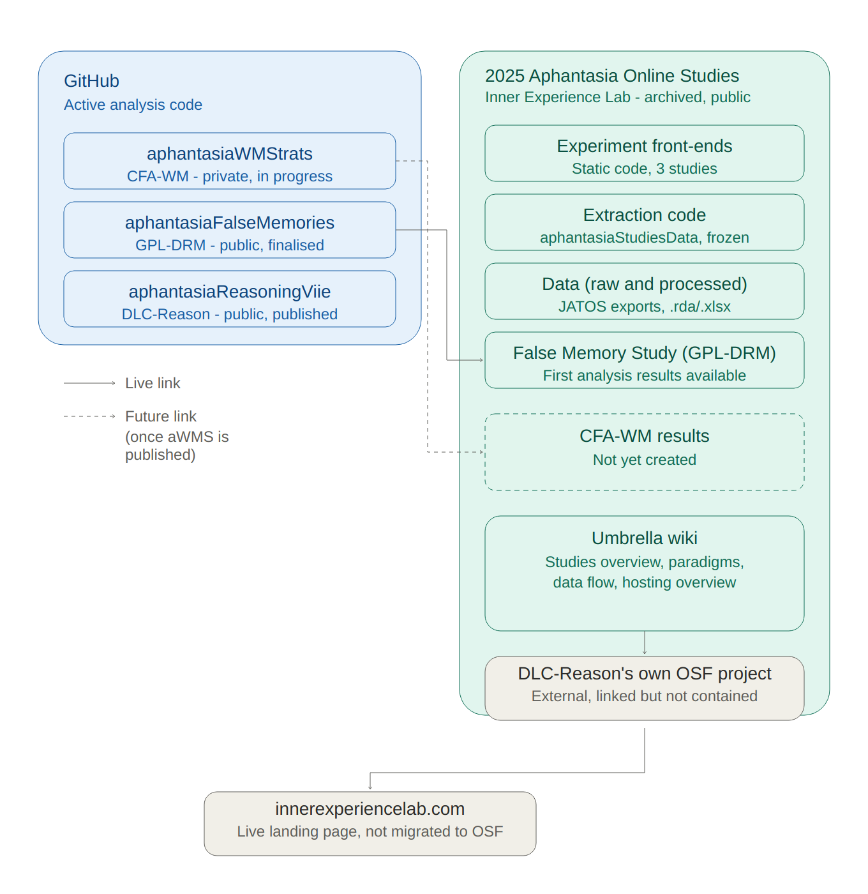
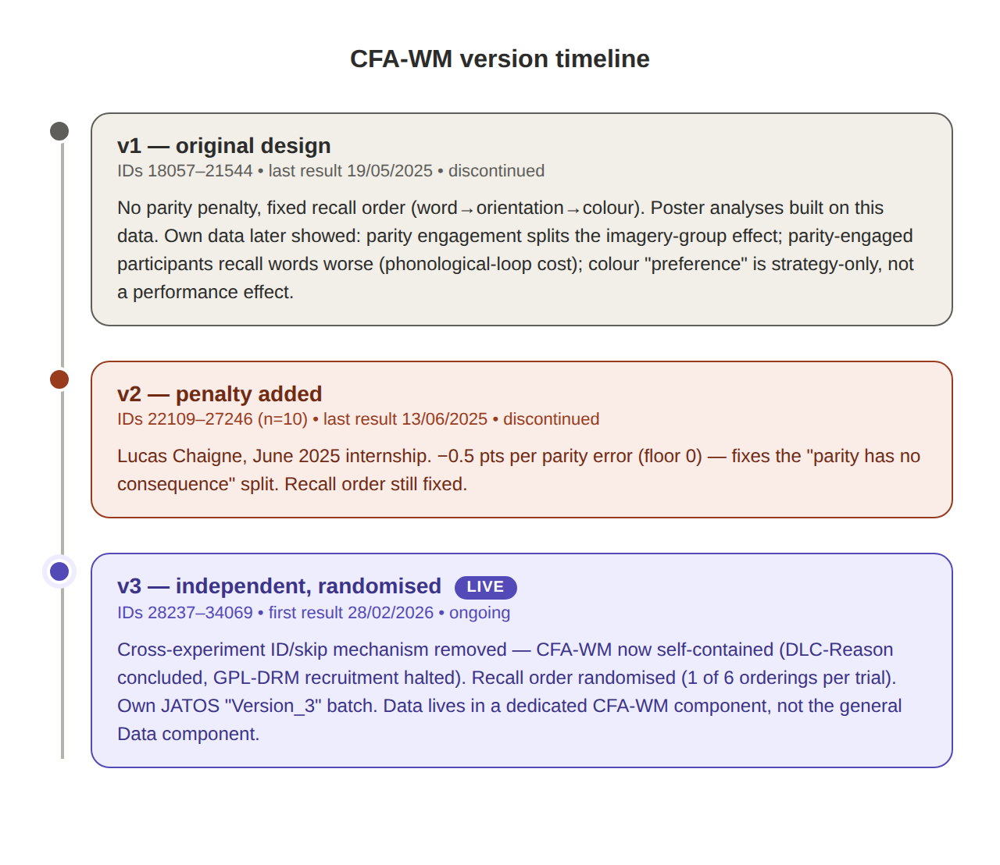

Task design: the story of a paradigm that kept correcting itself
task-design.RmdUnderneath the WM-FTT’s aim of studying individual differences in mental representation is a narrower and more awkward question: does an original paradigm actually measure what it was built to measure? The task ran in three versions. The differences between them are not incidental fixes. Each version exists because the previous one’s own data showed a specific way the design was undermining its own validity.
This page tells that story, and shows the task as participants met it.
1. The question the task was built for
Aphantasic individuals perform about as well as typical imagers on visual working memory tasks, despite reporting no voluntary visual imagery. Asked how, they say they compensate: verbal labels, spatial relations, anything but pictures.
That answer is not the thing under suspicion. A strategy is what a person takes themselves to be doing, and no behavioural pattern can overrule their own account of it. The difficulty is narrower: raw per-feature accuracy cannot tell a deliberate choice from an inability. A low colour score is equally consistent with being worse at colour and with having given colour up to protect something else, and those are different claims about the same number.
WM-FTT is built to separate them, and to offer the reports something to converge with. Every stimulus carries three features at once, and scoring gives partial credit for each, so a participant who divides effort unevenly across features leaves a trace in the pattern of their scores rather than in any one of them. The question stops being “which strategy do you use” and becomes “where did the effort go”.
2. What a trial looks like
Each stimulus is a coloured rectangle containing a written word, shown at some rotation. Three independent features to remember, in one object: a word (verbal), an orientation (spatial), a colour (visual).

Between stimuli, participants judge whether a digit is odd or even. This is a distractor, there to stop simple visual rehearsal carrying a stimulus across the gap and to force active encoding.

One full encoding cycle, fixation through stimulus through the parity judgements that follow it, repeats once per stimulus:

After all three stimuli, participants recall each item’s word by typing it, its orientation by rotating an on-screen rectangle, and its colour by clicking a point on a colour wheel.

Scoring is feature by feature with partial credit, and participants are told to aim for the highest score. That instruction is the manipulation. A points-per-feature incentive is what turns uniform effort into a suboptimal strategy and makes the trade-off worth measuring.
Twenty-one experimental trials in three blocks of seven, preceded by three training trials. Each trial presents three items, and each item is a word shown at an orientation in a colour, so a participant sees 63 items in all. Those two units are used strictly throughout this report: a trial is one encode-distract-recall cycle and there are 21 of them; an item is one of the three objects inside a trial and there are 63. The task draws on 63 distinct colours and 63 distinct angles so that no value repeats.
3. v1: what the first version’s own data exposed
The first version ran as designed: no penalty on the parity task, and a fixed recall order, word then orientation then colour, on every trial.

Two problems surfaced, both visible in the data rather than anticipated.
The parity task had no consequence, and the sample split on that. Because parity performance did not affect the score participants saw, a large part of the sample worked this out and stopped doing it properly, treating it as free time to rehearse instead. The task engagement page puts numbers on it: 25 of 88 answered no parity probe at all, and 39 of 88 answered fewer than half. Not one participant answered every probe. That the penalty was genuinely absent is checkable directly:
block_trials |>
dplyr::filter(version == "v1") |>
dplyr::summarise(
feature_scores_summed = sum(feedback_score_word) +
sum(feedback_score_angle) + sum(feedback_score_color),
trial_score_shown = dplyr::first(feedback_trial_score),
.by = c(id, expe_phase, trial_number)
) |>
dplyr::summarise(
trials = dplyr::n(),
trials_where_they_match = sum(
abs(feature_scores_summed - trial_score_shown) < 1e-9)
) |>
knitr::kable(caption = "v1: the trial score is exactly the sum of the three feature scores")| trials | trials_where_they_match |
|---|---|
| 1848 | 1848 |
Every trial. No deduction was ever applied.
The consequence was not that the distractor did nothing. It was that it was not experienced uniformly: some participants carried a dual-task load throughout and others carried none, and nothing in the design records which. That is a problem for any group comparison drawn from v1, because the two subgroups were doing materially different tasks. The task engagement page shows that abandoning parity is not a proxy for disengaging from the task as a whole, which is why v2 added the penalty rather than excluding anyone.
Self-reported priority and measured allocation are not the same measurement. Asked afterwards which features they had tried to keep for points, v1 participants named words far more than anything else: 78 of 88 named words first, against three for colours and one for orientations. Words are also the feature they scored highest on, so the report and the behaviour are not in conflict here — the composition page shows the two converging.
What does not follow is that the report can stand in for the behaviour. Which feature someone named barely moves their behavioural composition, and the task validity page tabulates that directly. The two measures agree in aggregate and are not interchangeable at the level of an individual, which is the reason the task exists at all.
4. v2: fixing the incentive, not the order
A June 2025 internship added the parity penalty: each incorrect judgement subtracts 0.5 points from the trial’s running score, floored at zero so parity errors alone cannot make a trial negative. Recall order stayed fixed.
v2 is a genuine partial fix. It closes the gap between engaged and disengaged participants that drove the imagery-group inconsistency, and it leaves the order confound untouched. Its own sample is small.
5. Why v2 stopped
Two things happened that had nothing to do with WM-FTT. A sibling reasoning study concluded, and a false-memory study’s recruitment was halted after its own analysis surfaced problems. All three had shared a single online entry point and a common pseudonymisation mechanism that let a participant who did more than one study skip repeating shared questionnaires. WM-FTT’s continued operation depended on infrastructure tied to studies that were no longer running.

So the task became independent: the cross-experiment lookup was removed, and data collection became self-contained.
6. v3: independent, randomised, live
v3 carries the parity penalty over from v2 and adds response-order randomisation: one of the six possible orderings of word, orientation and colour is drawn per trial. This does not target the parity split, which v2 already addressed. It removes recall order as a fixed structural feature, and with it a class of confounds that any order-related finding would otherwise have to rule out.


7. Where that leaves the three versions
block_trials |>
dplyr::distinct(id, version, vviq_group_2) |>
dplyr::count(version, vviq_group_2) |>
tidyr::pivot_wider(names_from = vviq_group_2, values_from = n,
values_fill = 0) |>
knitr::kable(caption = "Participants per version and imagery group")| version | aphantasia | typical | NA |
|---|---|---|---|
| v1 | 31 | 55 | 2 |
| v2 | 8 | 1 | 0 |
| v3 | 17 | 4 | 0 |
| v1 | v2 | v3 | |
|---|---|---|---|
| Parity penalty | none | −0.5 per error, floored at 0 | −0.5 per error, floored at 0 |
| Recall order | fixed | fixed | randomised per trial |
| Cross-study ID lookup | active | active | removed |
| Status | discontinued | discontinued | live |
The versions are not a single pooled sample. Both changes have identified, data-supported reasons to affect performance and strategy measures, so version has to be treated as a structural feature of the design rather than a nuisance covariate.
In practice this project goes further. v1 is the primary analysis sample, and v2 and v3 are described rather than modelled. v1 is the only version with a usable imagery-group split, and pooling the three actively produced a false result: an apparent association between non-response and imagery vividness that dissolves once version is accounted for, because v3 is simultaneously aphantasia-heavy and the version where participants answered least.
non_response <- block_trials |>
dplyr::mutate(participant = paste(id, version, sep = "_")) |>
dplyr::summarise(
non_response = 1 - mean(c(responded_angle, responded_color)),
vviq = dplyr::first(vviq_total_score),
.by = c(participant, version)
)
tibble::tibble(
sample = c("All versions pooled", "v1 alone"),
rho = c(
stats::cor(non_response$non_response, non_response$vviq,
method = "spearman", use = "complete.obs"),
with(dplyr::filter(non_response, version == "v1"),
stats::cor(non_response, vviq, method = "spearman",
use = "complete.obs"))
)
) |>
knitr::kable(digits = 3,
caption = "Non-response against imagery vividness, pooled and within v1")| sample | rho |
|---|---|
| All versions pooled | -0.314 |
| v1 alone | -0.124 |
The pooled figure looks like a finding. It is an artefact of mixing three samples that differ in both composition and behaviour, and it is the clearest argument in this project for the position the version history had already arrived at on other grounds.
v3 keeps one job that only it can do: it is the only version with randomised recall order, so it is the only data that can estimate how much the fixed order in v1 confounds feature comparisons.
8. What the task achieved, and what it did not
The design goal was a three-way trade-off between word, orientation and colour. What it produced is a two-way one. Word recall turns out to be too easy to compete: participants can max it cheaply and then divide what is left between the two non-verbal features.
block_trials |>
dplyr::filter(version == "v1") |>
dplyr::summarise(
`Word` = mean(score_word[responded_word] == 1),
`Orientation` = mean(score_angle[responded_angle] == 1),
`Colour` = mean(score_color[responded_color] == 1)
) |>
tidyr::pivot_longer(dplyr::everything(), names_to = "Feature",
values_to = "Share of answered items at ceiling") |>
knitr::kable(digits = 3, caption = "Exact matches among answered items, v1")| Feature | Share of answered items at ceiling |
|---|---|
| Word | 0.907 |
| Orientation | 0.000 |
| Colour | 0.005 |
Nine in ten answered word items are exact matches. The consequence runs through the whole project: word barely discriminates between participants, so the verbal arm of the compositional analysis rests on the least informative of the three measures. The task validity page puts a number on that with split-half reliability, computed there rather than quoted here, and the scoring page works through what it does and does not permit.
This is the kind of thing a paradigm can only learn from its own data, which is also the theme of the two version changes that came before it. A fourth version would need to make the word feature harder, distinguish a deliberate non-response from an untouched widget, and vary the points per feature so that strategic skipping can be told apart from an absent representation.
Continuing through the Extended Online Report: this page follows the participants. To keep reading in order, continue to scoring next. Or skip ahead to the analysis, which explains what the modelling pages do and why.
#> ─ Session info ───────────────────────────────────────────────────────────────
#> setting value
#> version R version 4.6.1 (2026-06-24)
#> os Ubuntu 22.04.5 LTS
#> system x86_64, linux-gnu
#> ui X11
#> language en
#> collate C.UTF-8
#> ctype C.UTF-8
#> tz UTC
#> date 2026-08-26
#> pandoc 3.8.3 @ /opt/hostedtoolcache/pandoc/3.8.3/x64/ (via rmarkdown)
#> quarto NA
#>
#> ─ Packages ───────────────────────────────────────────────────────────────────
#> package * version date (UTC) lib source
#> aphantasiaWMStrats * 0.1 2026-08-26 [1] local
#> bslib 0.12.0 2026-08-04 [2] CRAN (R 4.6.1)
#> cachem 1.1.0 2024-05-16 [2] CRAN (R 4.6.1)
#> cli 3.6.6 2026-04-09 [2] CRAN (R 4.6.1)
#> crayon 1.5.3 2024-06-20 [2] CRAN (R 4.6.1)
#> desc 1.4.3 2023-12-10 [2] CRAN (R 4.6.1)
#> digest 0.6.39 2025-11-19 [2] CRAN (R 4.6.1)
#> dplyr 1.2.1 2026-04-03 [2] CRAN (R 4.6.1)
#> evaluate 1.0.5 2025-08-27 [2] CRAN (R 4.6.1)
#> farver 2.1.2 2024-05-13 [2] CRAN (R 4.6.1)
#> fastmap 1.2.0 2024-05-15 [2] CRAN (R 4.6.1)
#> fs 2.1.0 2026-04-18 [2] CRAN (R 4.6.1)
#> generics 0.1.4 2025-05-09 [2] CRAN (R 4.6.1)
#> ggplot2 * 4.0.3 2026-04-22 [2] CRAN (R 4.6.1)
#> glue 1.8.1 2026-04-17 [2] CRAN (R 4.6.1)
#> gtable 0.3.6 2024-10-25 [2] CRAN (R 4.6.1)
#> htmltools 0.5.9 2025-12-04 [2] CRAN (R 4.6.1)
#> jquerylib 0.1.4 2021-04-26 [2] CRAN (R 4.6.1)
#> jsonlite 2.0.0 2025-03-27 [2] CRAN (R 4.6.1)
#> knitr 1.51 2025-12-20 [2] CRAN (R 4.6.1)
#> lifecycle 1.0.5 2026-01-08 [2] CRAN (R 4.6.1)
#> magrittr 2.0.5 2026-04-04 [2] CRAN (R 4.6.1)
#> otel 0.2.0 2025-08-29 [2] CRAN (R 4.6.1)
#> pillar 1.11.1 2025-09-17 [2] CRAN (R 4.6.1)
#> pkgconfig 2.0.3 2019-09-22 [2] CRAN (R 4.6.1)
#> pkgdown 2.2.1 2026-07-07 [2] any (@2.2.1)
#> purrr 1.2.2 2026-04-10 [2] CRAN (R 4.6.1)
#> R6 2.6.1 2025-02-15 [2] CRAN (R 4.6.1)
#> ragg 1.5.2 2026-03-23 [2] CRAN (R 4.6.1)
#> RColorBrewer 1.1-3 2022-04-03 [2] CRAN (R 4.6.1)
#> renv 1.0.7 2024-04-11 [2] RSPM (R 4.6.1)
#> rlang 1.3.0 2026-07-05 [2] CRAN (R 4.6.1)
#> rmarkdown 2.31 2026-03-26 [2] CRAN (R 4.6.1)
#> S7 0.2.2 2026-04-22 [2] CRAN (R 4.6.1)
#> sass 0.4.10 2025-04-11 [2] CRAN (R 4.6.1)
#> scales 1.4.0 2025-04-24 [2] CRAN (R 4.6.1)
#> sessioninfo 1.2.4 2026-06-04 [2] CRAN (R 4.6.1)
#> systemfonts 1.3.2 2026-03-05 [2] CRAN (R 4.6.1)
#> textshaping 1.0.5 2026-03-06 [2] CRAN (R 4.6.1)
#> tibble 3.3.1 2026-01-11 [2] CRAN (R 4.6.1)
#> tidyr 1.3.2 2025-12-19 [2] CRAN (R 4.6.1)
#> tidyselect 1.2.1 2024-03-11 [2] CRAN (R 4.6.1)
#> vctrs 0.7.3 2026-04-11 [2] CRAN (R 4.6.1)
#> withr 3.0.3 2026-06-19 [2] CRAN (R 4.6.1)
#> xfun 0.60 2026-07-09 [2] CRAN (R 4.6.1)
#> yaml 2.3.12 2025-12-10 [2] CRAN (R 4.6.1)
#>
#> [1] /tmp/RtmpN0ePCc/temp_libpath84682c529b05
#> [2] /home/runner/.cache/R/renv/library/aphantasiaWMStrats-f7ce8556/linux-ubuntu-jammy/R-4.6/x86_64-pc-linux-gnu
#> [3] /home/runner/.cache/R/renv/sandbox/linux-ubuntu-jammy/R-4.6/x86_64-pc-linux-gnu/e7c0fad7
#> * ── Packages attached to the search path.
#>
#> ──────────────────────────────────────────────────────────────────────────────